Bei den Planungsbeispielen wird die korrekte Benutzung der PSA gegen Absturz vorausgesetzt. Bei einer Fehlanwendung der PSA gegen Absturz kann es trotz korrekt ausgeführter Planung zu einem Unfallgeschehen kommen.
Das System für die Benutzung von PSA gegen Absturz muss in Kombination mit der Verbindungsmittellänge geplant werden, damit Hinweise zur Auswahl für das Verbindungsmittel zur Dokumentation für die Benutzung (z. B. Betriebsanweisung, Unterlage für spätere Arbeiten) festgelegt werden können.
Hinweise zur grafischen Darstellung der Beispiele:
Grauer Bereich: Bereich ohne besondere Absturzgefahr
Grüner Bereich: Rückhaltebereich
Darstellung = der Radius des grünen Bereichs ist der kürzeste Abstand zur nächstgelegenen Absturzkante und zeigt den erreichbaren Bereich an.
Begehbar mit geeigneter PSA gegen Absturz in einem Rückhaltesystem. Die PSA gegen Absturz darf nicht länger sein als der kürzeste Abstand zur nächstgelegenen Absturzkante abzüglich 1,50 m.
Dieser Bereich sollte planerisch einen möglichst großen Teil des absturzgefährdeten Bereichs bedecken. Dafür sind die Anzahl, die Positionierung und die Art der Anschlageinrichtung essenziell. Überfahrbare Seil- und Schienensicherungssysteme sind den Einzelanschlageinrichtungen immer vorzuziehen. Ein Rettungskonzept für die Arbeiten auf der Dachfläche ist erforderlich.
Oranger Bereich: Auffangbereich
Darstellung = "grüner Bereich" + max. Auslenkung der AE + 2,00 m.
Begehbar mit geeigneter PSA gegen Absturz in einem Auffangsystem. Ein Sturz in das Auffangsystem ist möglich! Pendelsturz möglich! Ein Rettungskonzept für das Retten der aufgefangenen Person ist notwendig!
Gebrauchsanweisung der PSA gegen Absturz beachten. Insbesondere in Bezug auf den Bandfalldämpfer und die Eignung der PSA gegen Absturz zur Belastung über die Kante.
Orange Bereiche sind planerisch auf ein Minimum zu reduzieren. Regelmäßige Arbeiten dürfen in diesem Bereich nicht durchgeführt werden.
Roter Bereich: nicht gesicherter Bereich
Nicht sicher begehbar. Diese Bereiche sind nicht von dem vorliegenden Sicherungssystem erfasst. Sollten Arbeiten in diesen Bereichen notwendig sein, müssen zusätzliche geeignete Maßnahmen getroffen werden.
| Umwehrung | |
| Absperrrung | |
| gekennzeichneter Verkehrsweg | |
| liniengeführtes Sicherungssystem, überfahrbar oder nicht überfahrbar | |
| Eckstütze des liniengeführten Sicherungssystems | |
| Einzelanschlageinrichtung (EAE) |
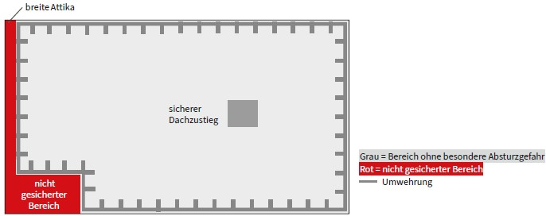
Abb. 2 Prinzipskizze für Ausstattungsklasse A mit einer Umwehrung, Zugang zum Dach mit sicherem Dachzustieg
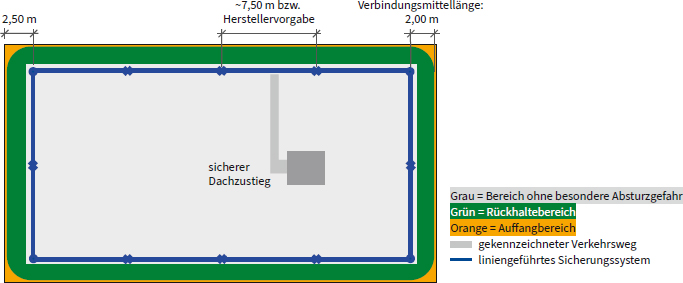
Abb. 23 Prinzipskizze für Ausstattungsklasse B auf einem Flachdach mit überfahrbarem liniengeführtem Sicherungssystem, sicherem Dachzustieg und gekennzeichnetem Verkehrsweg
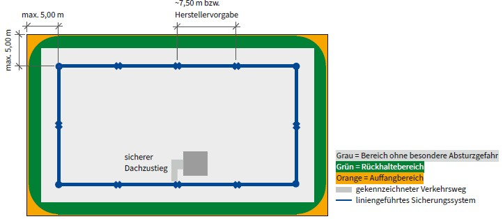
Abb. 24 Prinzipskizze für Ausstattungsklasse B auf einem Flachdach mit überfahrbarem Seil- oder Schienensicherungssystem und Zugang zum Dach mit sicherem Dachzustieg und gekennzeichneter Verkehrsweg
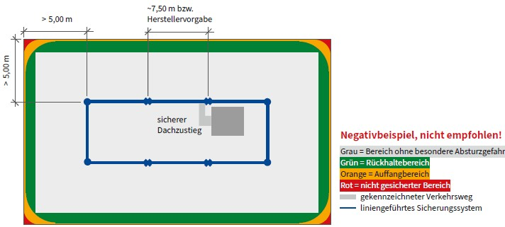
Abb. 25 Negativbeispiel: Prinzipskizze für Ausstattungsklasse B mit einem überfahrbaren liniengeführten Sicherungssystem, sicherem Dachzustieg und gekennzeichnetem Verkehrsweg
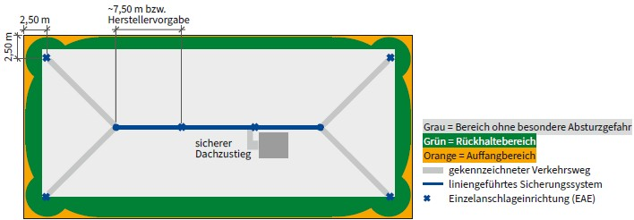
Abb. 26 Prinzipskizze für Ausstattungsklasse B mit Beispiel für überfahrbares liniengeführtes Sicherungssystem und Einzelanschlagpunkten in Eckbereichen, sicherem Dachzustieg und gekennzeichnetem Verkehrswegen
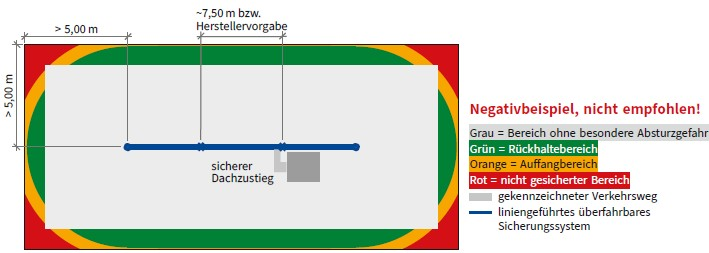
Abb. 27 Negativbeispiel: Prinzipskizze für Ausstattungsklasse B mit einem mittig angeordneten überfahrbaren liniengeführten Sicherungssystems und sicherem Dachzustieg
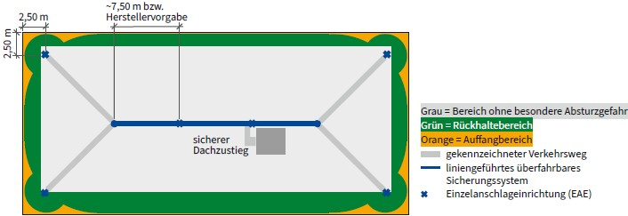
Abb. 28 Prinzipskizze für Ausstattungsklasse B mit einem überfahrbaren liniengeführten Sicherungssystem mittig angeordnet mit zusätzlicher Eckabsicherung, sicherem Dachzustieg und gekennzeichnetem Verkehrsweg
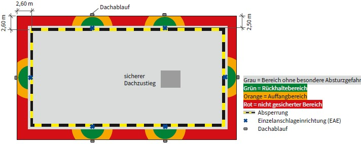
Abb. 29 Prinzipskizze für Ausstattungsklasse C mit Einzelanschlageinrichtungen (EAE) an wartungsintensiver Infrastruktur auf der Dachfläche, Absperrung und sicherem Dachzustieg
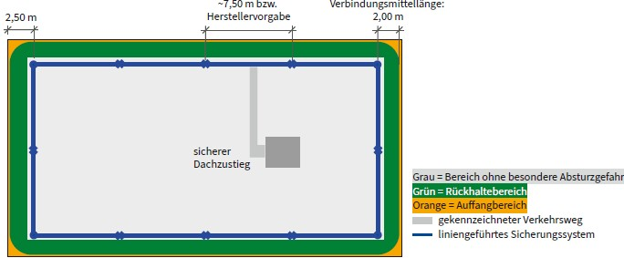
Abb. 30 Prinzipskizze für Ausstattungsklasse C mit einem nicht überfahrbaren liniengeführten Sicherungssystem, sicherem Dachzustieg und gekennzeichnetem Verkehrsweg
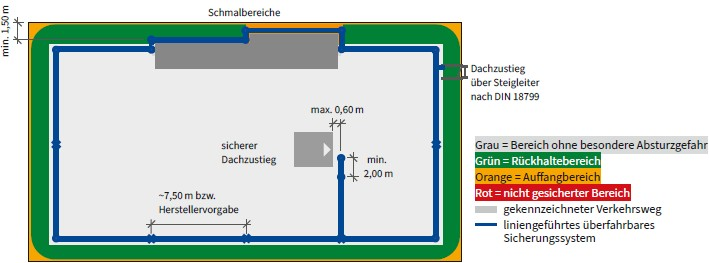
Abb. 31 Prinzipskizze mit Beispiel für Ausstattungsklasse C mit Versprüngen des überfahrbaren liniengeführten Sicherungssystems < 2,00 m zur Absturzkante (Schmalbereiche) und Zugang über sichere Dachzustiege
Nur wenn ein baulicher Zwang vorliegt (z. B. an vorhandenen baulichen Hindernissen und Dachzustiegen), kann in begründeten Fällen das Seil- oder Schienensicherungssystem durch den absturzgefährdeten Bereich verlaufen.
Ein Rückhaltesystem mit einem entsprechenden gekürzten mitlaufenden Auffanggerät an beweglicher Führung kann nur bis zu einem Mindestabstand von 1,50 m der Anschlageinrichtung zur Absturzkante gewährleistet werden. Dafür muss entsprechend geeignete PSA gegen Absturz als Auffangsystem verwendet werden.
Hinweis: Eine Solaranlage ist kein baulicher Zwang.
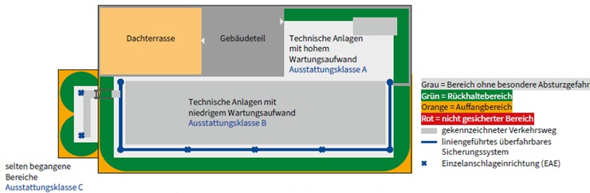
Abb. 32 Prinzipskizze mit Beispiel für Ausstattungsklasse C auf einer Dachfläche mit mehreren Ausstattungsklassen (Zonierung)
Bei der Bewertung der Dachfläche (siehe Kapitel 6) kann es zu dem Ergebnis kommen, dass für voneinander getrennte Bereiche eines Daches unterschiedliche Ausstattungsklassen sinnvoll sind.
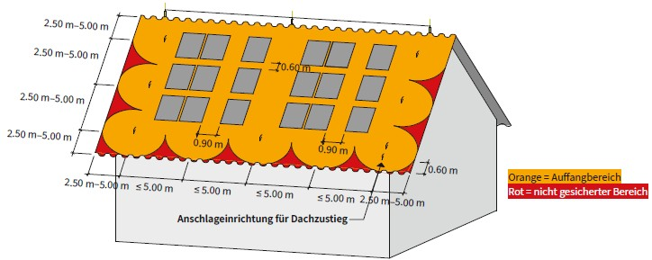
Abb. 33 Prinzipskizze für Ausstattungsklasse B mit Steildach als Satteldach mit liniengeführtem überfahrbarem Sicherungssystem im Firstbereich und Sicherheitsdachhaken
Betretbare und durchsturzsichere Dächer:
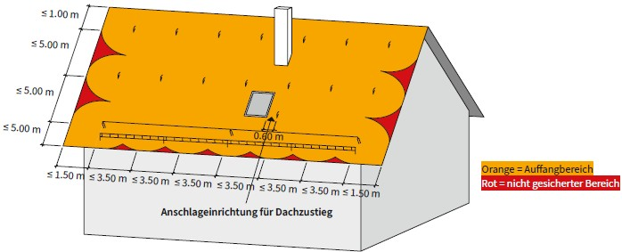
Abb. 34 Prinzipskizze für Ausstattungsklasse B mit Steildach als Satteldach mit Sicherheitsdachhaken in Kombination mit liniengeführtem überfahrbaren Seil- oder Schienensystem. Einsatz in schneearmen Gebieten oder bei Dächern mit Aufbauten.
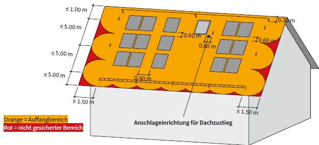
Abb. 35 Prinzipskizze für Ausstattungsklasse B mit Steildach als Satteldach mit Sicherheitsdachhaken in Kombination mit liniengeführtem überfahrbaren Seil- oder Schienensystem. Einsatz in schneereichen Gebieten oder bei Dächern ohne Aufbauten.
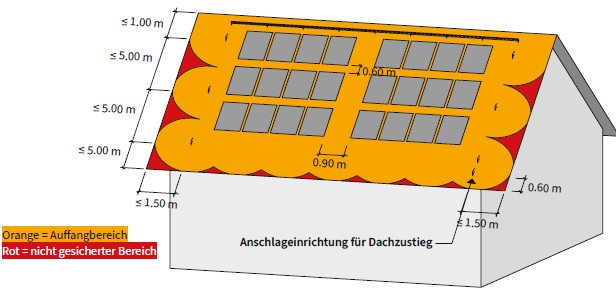
Abb. 36 Prinzipskizze für Ausstattungsklasse B mit Steildach als Satteldach mit Sicherheitsdachhaken in Kombination mit liniengeführtem überfahrbaren Seil- oder Schienensystem. Einsatz bei mit PV-Anlagen belegter Dachflächen ohne Aufbauten.
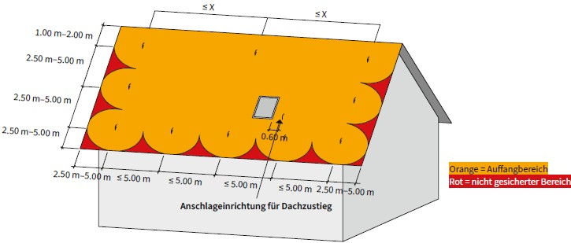
Abb. 37 Prinzipskizze für Ausstattungsklasse C mit Steildach als Satteldach mit ausreichender Sicherheit gegen Ausrutschen mit Sicherheitsdachhaken
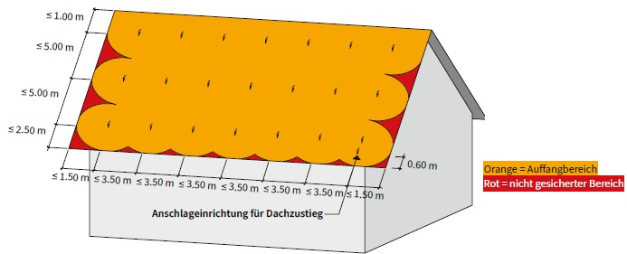
Abb. 38 Prinzipskizze für Ausstattungsklasse C mit Steildach als Satteldach ohne ausreichende Sicherheit gegen Ausrutschen mit Sicherheitsdachhaken. Einsatz von Dachauflegeleitern erforderlich.
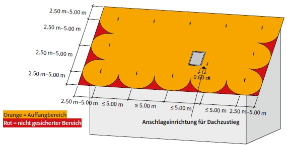
Abb. 39 Prinzipskizze für Ausstattungsklasse C mit Steildach als Pultdach mit Sicherheitsdachhaken